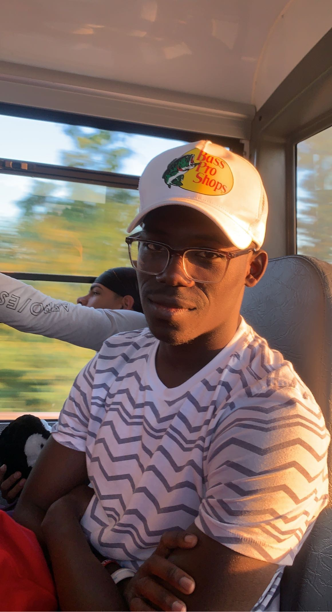
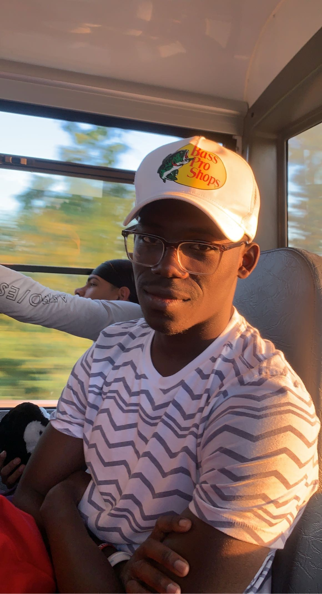

Hello, my name is Babatunde Fakolujo. I am currently a sophomore at the University of Rhode Island, majoring in Computer Science. Some of my hobbies include playing basketball, going on runs, hanging out with friends, and playing video games. I got into computer science because I've always wanted to build my own game since I was a kid, and it's still a goal of mine. My first experience with coding was in my senior year of high school when I took a coding class, and I knew it was a perfect fit for me.